Machine learning
Week 9: uncertainty and interpretation
What is the best prediction of an outcome if the loss is squared error? If it is absolute error? If a miss costs ten times a false alarm?
Where we left off
| Loss | Best prediction at \(x\) | |
|---|---|---|
| Squared error, \((y - \hat y)^2\) | the conditional mean, \(\mathbb E[Y \mid X = x]\) | optimal model theorem |
| Absolute error, \(\lvert y - \hat y \rvert\) | the conditional median | stated |
| A miss costs \(c_{FN}\), a false alarm \(c_{FP}\) | predict \(1\) when \(p(x) > c^\star = \frac{c_{FP}}{c_{FP} + c_{FN}}\) | optimal threshold theorem |
Decision principle: choose the prediction \(\hat y\) that minimizes the expected loss given the inputs, \(\mathbb E[\ell(Y, \hat y) \mid X = x]\)
Squared loss gives the mean, absolute loss the median. Which loss makes the best prediction the 90th percentile?
Week 9: uncertainty and interpretation
Part 1: decisions and quantiles
Part 2: regression uncertainty and intervals
Part 3: classification uncertainty and calibration
Part 4: interpreting the model
Part 5: the model and the world
Part 1: decisions and quantiles
Finding the quantile
Charge \(\tau\) for each unit of underprediction (\(y > \hat y\)) and \(1 - \tau\) for each unit of overprediction (\(y < \hat y\)). Move the prediction up from \(\hat y\) to \(\hat y + \delta\):
- an outcome above \(\hat y\): its loss falls by \(\tau\delta\)
- an outcome below \(\hat y\): its loss rises by \((1 - \tau)\delta\)
With \(F\) the distribution function of \(Y\) given \(X = x\), the expected change is about \[ \delta\,\big[(1 - \tau)F(\hat y) - \tau\,(1 - F(\hat y))\big] = \delta\,\big[F(\hat y) - \tau\big] \]
Keep moving up while \(F(\hat y) < \tau\); stop where \(F(\hat y) = \tau\): the \(\tau\)-quantile. For the 90th percentile, \(\tau = 0.9\)
Quantile optimality
Pinball loss: \[ \rho_\tau(y - \hat y) = (y - \hat y)\,\big(\tau - \mathbf 1\{y < \hat y\}\big) \] \(\tau\,(y - \hat y)\) for an underprediction, \((1 - \tau)(\hat y - y)\) for an overprediction. With \(\tau = \frac12\), half the absolute error
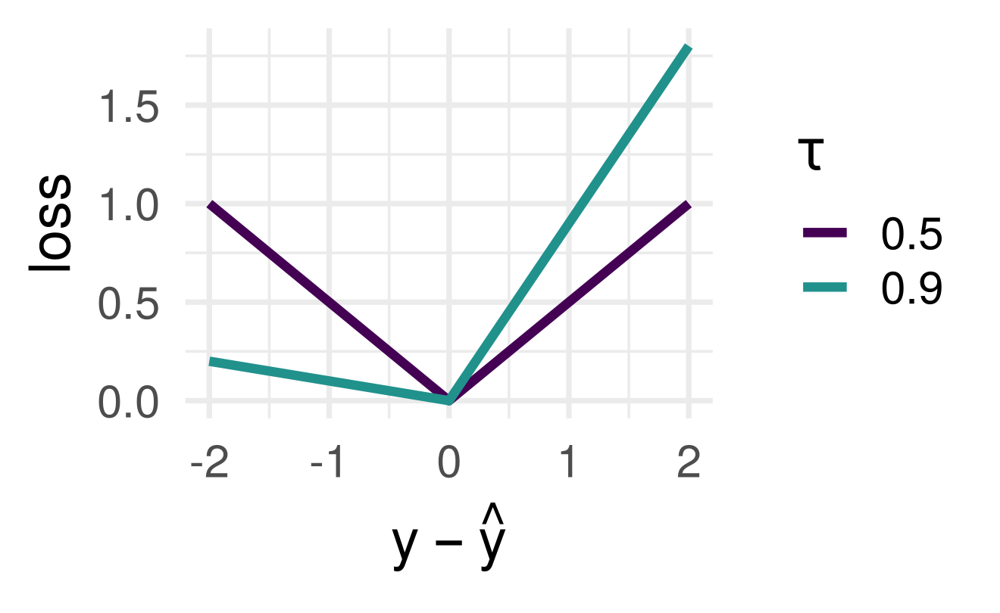
Quantile optimality theorem. If \(Y \mid X = x\) has a continuous distribution and \(0 < \tau < 1\), then \(\arg\min_{\hat y} \mathbb E[\rho_\tau(Y - \hat y) \mid X = x]\) is the conditional \(\tau\)-quantile \(q_\tau(x)\)
Squared loss gave the mean; half the absolute error, \(\tau = \frac12\), gives the median
Quantile regression
Minimize the average pinball loss over a class: \(\hat q_\tau = \arg\min_{f \in \mathcal F} \frac1n \sum_i \rho_\tau\big(y_i - f(x_i)\big)\). Here \(\mathcal F\) is linear; 1,000 simulated points whose noise grows with \(x\)

The same loss, a flexible model
Boosted trees with the pinball loss: each tree fits the negative gradient \(\tau - \mathbf 1\{y_i < \hat f(x_i)\}\), which pushes the fit up where points lie above it
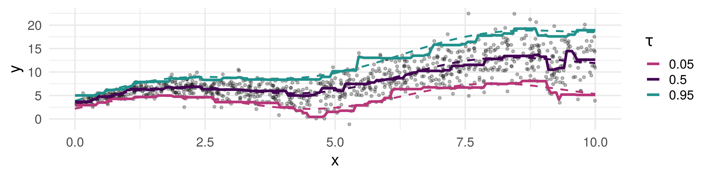
Boosting: each small tree approximates the negative gradient of the training loss
Part 2: regression uncertainty and intervals
Two kinds of interval
At a new \(x_0\), \(Y_0 = f^\star(x_0) + \varepsilon_0\)
- Confidence interval for \(f^\star(x_0)\) (dark): uncertainty about the fit; it narrows as \(n\) grows
- Prediction interval for \(Y_0\) (light): must also cover \(\varepsilon_0\); it does not narrow below the noise
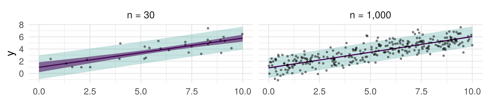
Bias–variance at \(x_0\): \(\sigma^2 + \text{bias}^2 + \text{variance}\); more data shrink only the variance
An interval from two quantiles
A 90% interval from two quantile fits: \(\hat C(x) = [\hat q_{0.05}(x), \hat q_{0.95}(x)]\). The true quantiles would cover \(Y\) with probability \(0.9\) at every \(x\); estimated ones aim at that
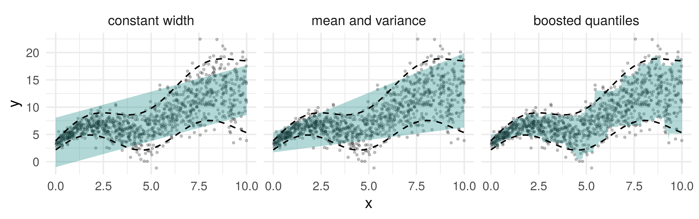
Checking an interval on fresh data
We claim 90 percent intervals. With fresh data in hand, how do you check the claim, and what could the check miss?

Overall: 88%, 89% and 87%; a wider interval always covers more
Coverage at every \(x\)
- Marginal coverage: \(P\big(Y \in \hat C(X)\big) \ge 1 - \alpha\), averaged over \(X\)
- Conditional coverage: \(P\big(Y \in \hat C(X) \mid X = x\big) \ge 1 - \alpha\) for every \(x\)
Impossibility of distribution-free conditional coverage. No procedure has a nontrivial finite-sample guarantee of coverage conditional on \(X = x\) that holds for every distribution with nonatomic inputs (Barber et al. 2021). Guarantees for groups (each range of \(x\), say), and results under assumptions or as \(n\) grows, remain possible
No free lunch theorem: no method does best on every distribution; a guarantee at every \(x\) needs an assumption about the distribution
Conformalized quantile regression
- Fit \(\hat q_{0.05}\), \(\hat q_{0.95}\) on some training rows; keep \(m\) others, the calibration set
- Score how far each \(y_i\) is outside (negative inside): \(E_i = \max\{\hat q_{0.05}(x_i) - y_i,\ y_i - \hat q_{0.95}(x_i)\}\)
- \(Q\): the \(\lceil 0.9\,(m + 1) \rceil\)-th smallest score
- \(\hat C(x) = \big[\hat q_{0.05}(x) - Q,\ \hat q_{0.95}(x) + Q\big]\)

Conformal coverage theorem (Romano et al. 2019). If the calibration rows and a new row are exchangeable, \(P(Y \in \hat C(X)) \ge 0.9\) for any quantile fits, and \(\le 0.9 + 1/(m + 1)\) if the scores have no ties
\(m = 500\), \(Q = 0.25\): coverage 87% to 90%; for \(x\) in 6–8, 80% to 82%. One \(Q\) for all \(x\)
Ways to make an interval
| Method | Assumes | Can claim |
|---|---|---|
Linear model, normal noise (predict(lm, interval = "prediction")) |
linear mean, constant variance, normal noise | 90% at every \(x\), if the model is right |
| A model for the mean and one for the variance | both models right, normal noise | about 90% at every \(x\), if right |
| Quantile regression, linear or flexible | the quantile model right | 90% at every \(x\) as \(n\) grows, if right |
| Split conformal prediction (Lei et al. 2018) | rows exchangeable, e.g. independent and from one distribution | at least 90% marginally, in finite samples; the same width at every \(x\) |
| Conformalized quantile regression (Romano et al. 2019) | rows exchangeable | at least 90% marginally, in finite samples; widths from the quantile fits |
More in the note on the course page, “Prediction intervals and calibration”
Part 3: classification uncertainty and calibration
A probability should match a frequency
A model gives \(\hat p = 0.2\) to 500 adults: their probability of having diabetes. What should be true of them?
About 100 of them should have diabetes. A score \(\hat p\) is calibrated if \[ P\big(Y = 1 \mid \hat p(X)\big) = \hat p(X) \]
The same idea as coverage: a stated probability should match a frequency. It conditions on the score, not on \(x\)
Reliability diagram
Diabetes (14% of the training adults). Two scores from nine measurements, fitted on 4,000 adults, checked on 3,000 others
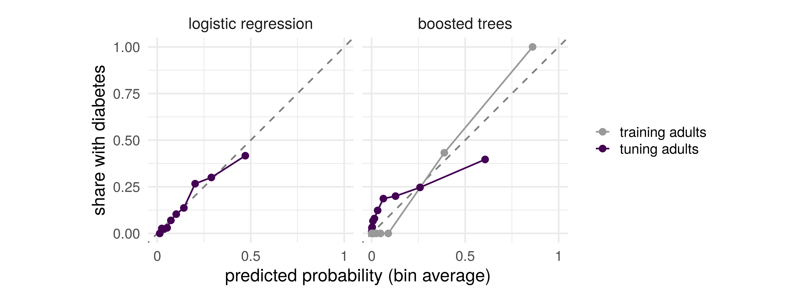
Calibration and the threshold
- The base rate, \(\hat p(x) = 0.14\) for every adult, is calibrated, and useless: calibration says nothing about how well a score separates those with diabetes from the rest
- If \(\hat p\) is calibrated, predicting \(1\) when \(\hat p(x) > c^\star\) is the best rule based on that score: the optimal threshold theorem, with \(\hat p(X)\) as the input. It is the Bayes rule only if \(\hat p = p\)
- If \(\hat p\) is not calibrated, \(c^\star\) is the wrong cut on it
Optimal threshold theorem: with costs \(c_{FP}\) and \(c_{FN}\), the rule that minimizes expected cost at \(x\) predicts \(1\) exactly when \(p(x) > c^\star = c_{FP}/(c_{FP} + c_{FN})\)
Recalibration
Fit \(\tilde p = 1/\big(1 + e^{-(a + b\,\mathrm{logit}\,\hat p)}\big)\) by a logistic regression of the label on \(\mathrm{logit}\,\hat p = \log\frac{\hat p}{1 - \hat p}\), on adults not used to fit \(\hat p\) (half the tuning adults); check on others (the other half)
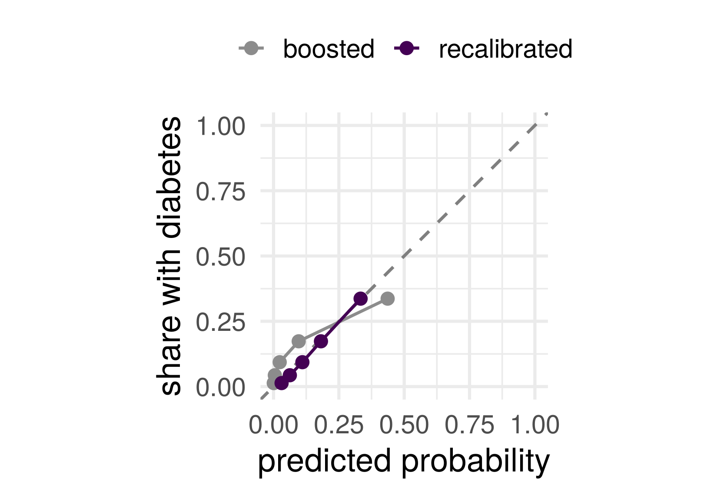
Fitted \(b = 0.39\): the boosted logits shrunk by about half
\(\tilde p\) is increasing in \(\hat p\) (for \(b > 0\)): the same ranking, new probabilities
Log loss on the checking adults: 0.375 before, 0.329 after
Calibrated within groups
Calibrated overall, wrong within groups. Multicalibration (Hébert-Johnson et al. 2018): calibrated within every group of a collection named in advance
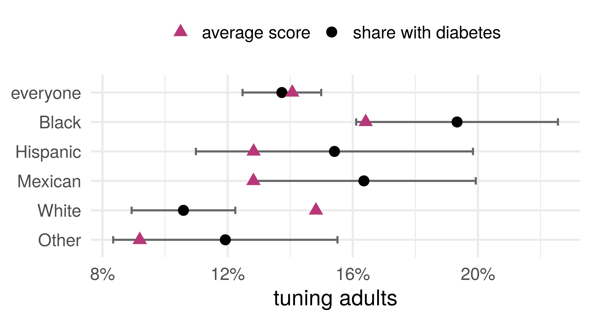
The logistic score above (race and ethnicity left out), 3,000 tuning adults, the survey’s groups
The fix: where a group’s share of 1s in a range of scores is off by more than a tolerance, shift those scores; repeat. Small cells fit noise; a group not named gets no guarantee
Part 4: interpreting the model
Partial dependence for any model
Options for the other inputs: hold them fixed (at medians, say: plotmo’s default); average over them (partial dependence, pdp); one curve for each unit (individual conditional expectation, ICE)
Unit \(i\)’s inputs with input \(j\) set to a value \(\tilde x_j\): \(\;\tilde{\mathbf x}_{ij} = (x_{i1}, \ldots, \tilde x_j, \ldots, x_{ip})\) \[ \mathrm{ICE}_i:\ \tilde x_j \mapsto \hat f(\tilde{\mathbf x}_{ij}), \qquad \mathrm{PDP}_j:\ \tilde x_j \mapsto \frac1n \sum_{i=1}^n \hat f(\tilde{\mathbf x}_{ij}) \]
Compute on a grid of \(\tilde x_j\) values and plot the curve(s). Any model that predicts will do
ICE evaluates \(\hat f\) at a modified input, which may correspond to no plausible unit. It is the model’s prediction there, not what would have happened to unit \(i\): recomputing a unit with its own noise, as in the causality seminar, asks a different kind of question, which this course does not develop
A forest fits interactions; its partial dependence plot
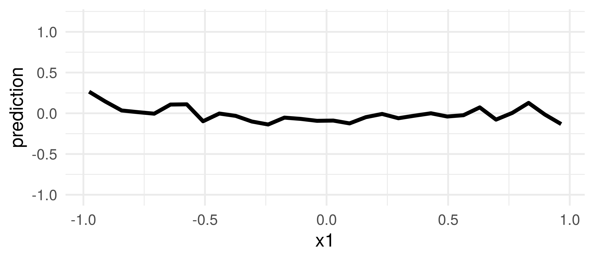
Black: the PDP, the forest’s prediction averaged over 100 units with \(x_1\) set and \(x_2\) left at each unit’s value. Nearly flat
A forest fits interactions; its ICE curves
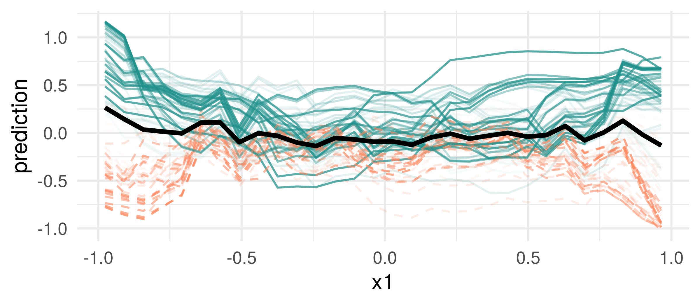
Thin: one curve per unit (ICE), solid where \(\cos(\pi x_2/2) > 0\), dashed where it is negative, more opaque the larger \(|\cos(\pi x_2/2)|\). The forest fitted the interaction, PDP hides it, and ICE might show it
Shapley values
Split a prediction among the inputs, \(\hat f(\mathbf x_i) - v_i(\varnothing) = \phi_{i1} + \dots + \phi_{ip}\); \(v_i(S)\) predicts from the inputs in \(S\) only (usually: the others averaged over the data, as in partial dependence). For two inputs, adding \(x_1\) in either order (for \(p\), all \(p!\) orders): \[ \phi_{i1} = \tfrac12\Big[\big(v_i(\{1\}) - v_i(\varnothing)\big) + \big(v_i(\{1, 2\}) - v_i(\{2\})\big)\Big] \]
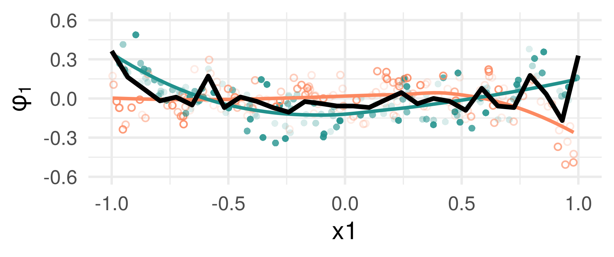
The forest; 300 units shaded as the ICE curves, a smooth for each sign: the spread shows the interaction. Black: the PDP minus the average prediction, the Shapley values’ average when inputs are independent
Feature/variable “importance”
- Which predictors are used most by the model?
- Does not necessarily tell us about causation (none of these methods do)
Tree-specific importance
Sum the RSS decrease of every split on \(x_j\) within a tree, then average over trees
Permutation importance
Permute values of predictor \(x_j\). How much does the accuracy of the model decrease? \[\mathrm{PI}_j = \widehat{\mathrm{Err}}(\hat f, x_j \text{ permuted}) - \widehat{\mathrm{Err}}(\hat f)\]

Each has pros/cons, no satisfactory answer for dependence
Permutation and extrapolation
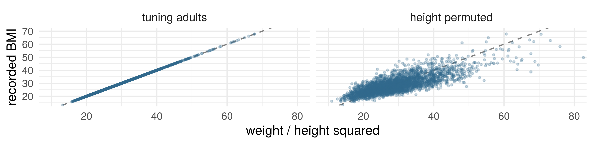
Shuffling height keeps each adult’s weight and BMI: BMI no longer matches weight and height for 68% of them (0% before); 28 are under 155 cm and over 110 kg (4 before)
The forest’s predictions there rest on almost no data, and permutation importance averages over them (Hooker, Mentch and Zhou 2021)
Permutation with correlated inputs
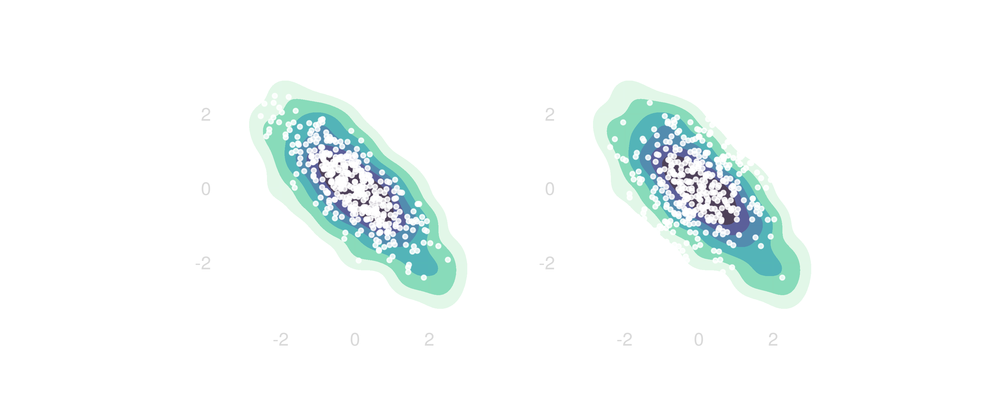
Where the data’s density is below 0.01: 18% of the permuted points, 1% of the data
Leave one covariate out
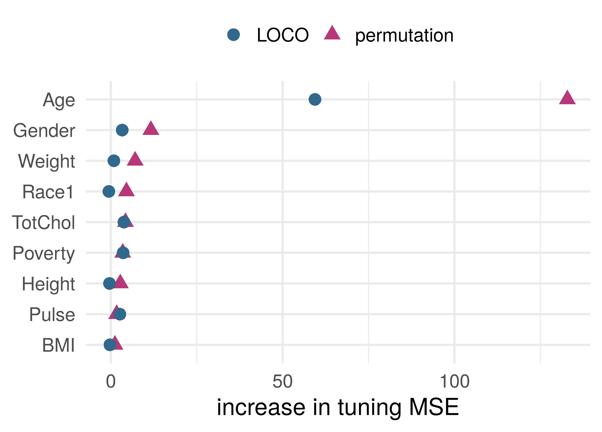
Refit without input \(j\), with the same settings; score on the same held-out adults (Lei et al. 2018): \[\mathrm{LOCO}_j = \widehat{\mathrm{Err}}\big(\hat f^{(-j)}\big) - \widehat{\mathrm{Err}}(\hat f)\]
No extrapolation from permuting; any method, at the cost of \(p\) refits
Weight, height and BMI together: 16.1, more than the three alone added up (0.9, -0.4, -0.3). Any two give the third
Marginal or conditional Shapley values
\(v_i(S)\) must fill in the inputs not in \(S\) (Chen et al. 2020):
- Marginal: from the data, ignoring \(\mathbf x_{iS}\), as in partial dependence. True to the model: an input \(\hat f\) ignores gets \(0\); but \(\hat f\) is evaluated where there may be no data, as in permutation
- Conditional: \(v_i(S) = \mathbb E\big[\hat f(X) \mid X_S = \mathbf x_{iS}\big]\). True to the data; but an input \(\hat f\) ignores gets a share through the inputs correlated with it, and the conditional distribution must be estimated
Example: \(\hat f(\mathbf x) = \beta_1 x_1\); inputs with mean \(0\), variance \(1\), correlation \(\rho\), and \(\mathbb E[X_1 \mid x_2] = \rho x_2\). Marginal: \(\phi_{i2} = 0\). Conditional: \(\phi_{i2} = \frac12 \rho \beta_1 x_{i2}\), and \(\phi_{i1} = \beta_1 x_{i1} - \phi_{i2}\)
Part 5: the model and the world
Predictions and outcomes
A partial dependence plot for \(x_1\) leaves \(x_2\) at each unit’s value. In the world, \(x_2\) responds to \(x_1\). To let it respond, what do we need besides the fitted model?
A causal model for the inputs. An explanatory causal model (ECM; Loftus, Bynum and Hansen 2024) adds the prediction \(\hat Y = \hat f(X)\), with the fitted model as its equation
The outcome \(Y\) is not in it: questions about \(Y\) also need \(\hat f\) to be right about the world
Here \(x_2 = x_1 + \varepsilon_2\) and \(y = x_1 + 2x_2 + \varepsilon\); \(\hat f\) is least squares on \(x_1\) and \(x_2\)
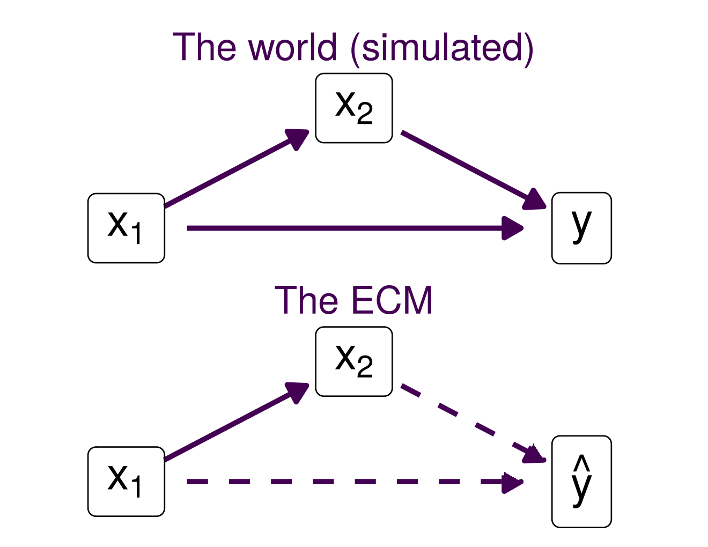
Natural direct and total dependence
In the ECM, set \(x_1 = t\) for every unit, predict, average, with \(x_2\)
- left at each unit’s value: the natural direct dependence plot (NDDP), which is the PDP
- recomputed from its equation: the total dependence plot (TDP), \(\mathbb E[\hat f(X) \mid do(x_1 = t)]\)

Slopes: NDDP 0.9, TDP 3.0. Marginal Shapley values for \(x_1\) lie on the NDDP; conditional ones, slope 1.6, on neither
Causal Shapley values (Heskes et al. 2020) put \(do(\cdot)\) in place of conditioning
Model-intervention corollary
Model-intervention corollary. Let \(f^\star(t, z) = \mathbb E[Y \mid T = t, Z = z]\). If \(Z\) holds every common cause of \(T\) and \(Y\) and no consequence of \(T\), and \(P(T = t \mid Z) > 0\), then \(\mathbb E_Z\big[f^\star(t, Z)\big] = \mathbb E[Y \mid do(T = t)]\)
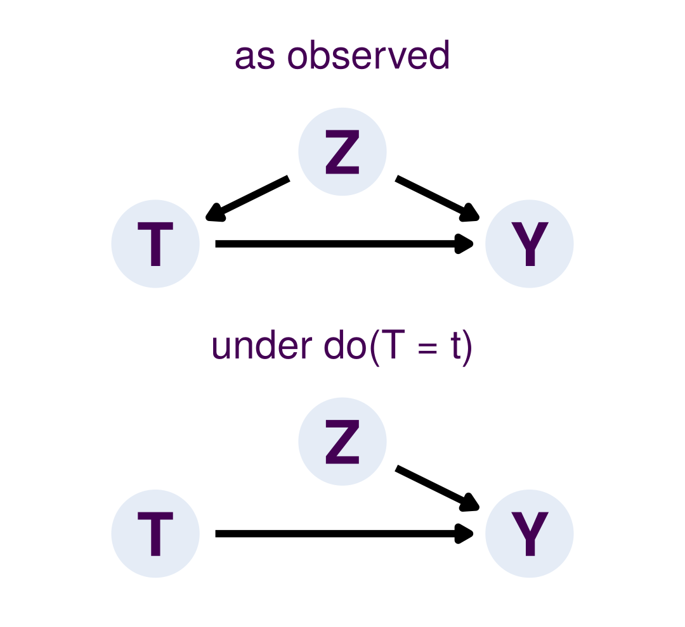
A population identity: the adjustment theorem, written with \(f^\star\). The PDP \(\frac1n\sum_i \hat f(t, z_i)\) estimates it, an estimate even when \(\hat f = f^\star\): \[ \mathrm{PDP}_T(t) = \mathbb E[Y \mid do(T = t)] + \text{model error} + \text{sampling error} \]
Where the condition fails
Partial dependence (pink) against the effect of setting the plotted input (dashed), in the simulated world
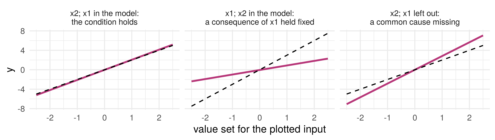
Adjustment theorem: every common cause of \(T\) and \(Y\), and no consequence of \(T\)
History: asthma and pneumonia
- In the 1990s, models predicted the risk of death from pneumonia, to decide who should be admitted to hospital
- A rule learned from the data: patients with asthma had a lower risk
- The reason: asthmatic patients with pneumonia were usually admitted straight to intensive care, and the care worked
- The rule was a correct description of the data. Acting on it would have sent patients with asthma home
- The most accurate model, a neural network, was not used: nobody could check what else it had learned (Caruana et al. 2015)
Conclusion
Uncertainty
The loss decides which number is the best prediction; two quantiles make an interval, and conformalizing them guarantees marginal coverage. Check coverage and calibration on data not used to fit, across the range of the inputs and within groups: no method guarantees coverage at every \(x\) without assumptions
Interpretation
Partial dependence, ICE, Shapley values and importance describe \(\hat f\). A curve is an effect only when no input is a consequence of the plotted one and every common cause is in the model; with a causal model for the inputs, the total dependence plot answers a different question
References
- Barber, R. F., Candès, E. J., Ramdas, A. and Tibshirani, R. J. (2021). The limits of distribution-free conditional predictive inference. Information and Inference: A Journal of the IMA 10(2), 455–482. doi:10.1093/imaiai/iaaa017. The result stated is Proposition 2.2, p. 459.
- Caruana, R., Lou, Y., Gehrke, J., Koch, P., Sturm, M. and Elhadad, N. (2015). Intelligible models for healthcare: predicting pneumonia risk and hospital 30-day readmission. Proceedings of the 21st ACM SIGKDD International Conference on Knowledge Discovery and Data Mining, 1721–1730. doi:10.1145/2783258.2788613
- Chen, H., Janizek, J. D., Lundberg, S. and Lee, S.-I. (2020). True to the model or true to the data? arXiv:2006.16234. arxiv.org/abs/2006.16234
- Hébert-Johnson, Ú., Kim, M. P., Reingold, O. and Rothblum, G. N. (2018). Multicalibration: calibration for the (computationally-identifiable) masses. Proceedings of the 35th International Conference on Machine Learning, PMLR 80, 1939–1948. proceedings.mlr.press/v80/hebert-johnson18a.html
- Heskes, T., Sijben, E., Bucur, I. G. and Claassen, T. (2020). Causal Shapley values: exploiting causal knowledge to explain individual predictions of complex models. Advances in Neural Information Processing Systems 33. NeurIPS proceedings
- Hooker, G., Mentch, L. and Zhou, S. (2021). Unrestricted permutation forces extrapolation: variable importance requires at least one more model, or there is no free variable importance. Statistics and Computing 31(6), article 82. doi:10.1007/s11222-021-10057-z
- Lei, J., G’Sell, M., Rinaldo, A., Tibshirani, R. J. and Wasserman, L. (2018). Distribution-free predictive inference for regression. Journal of the American Statistical Association 113(523), 1094–1111. Section 2.2 (split conformal) and section 6 (LOCO). doi:10.1080/01621459.2017.1307116
- Loftus, J. R., Bynum, L. E. J. and Hansen, S. (2024). Causal dependence plots. Advances in Neural Information Processing Systems 37. Definitions 2.5, 2.7 and 2.9, Theorem 2.10. doi:10.52202/079017-3579
- Romano, Y., Patterson, E. and Candès, E. J. (2019). Conformalized quantile regression. Advances in Neural Information Processing Systems 32, 3543–3553. NeurIPS proceedings. Section 4, equations 6 to 8 and Theorem 1
- Zhao, Q. and Hastie, T. (2021). Causal interpretations of black-box models. Journal of Business and Economic Statistics 39(1), 272–281. doi:10.1080/07350015.2019.1624293
ST310 Machine Learning